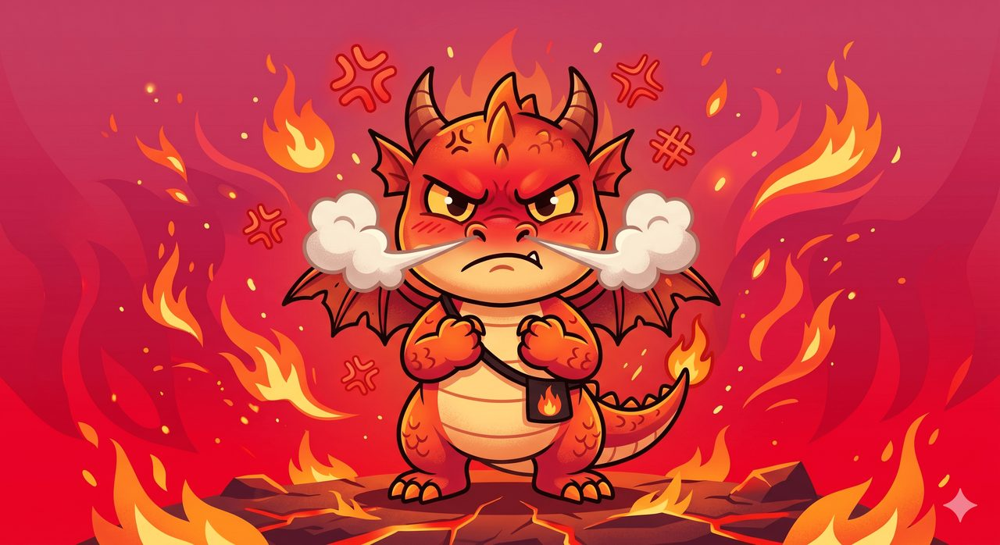
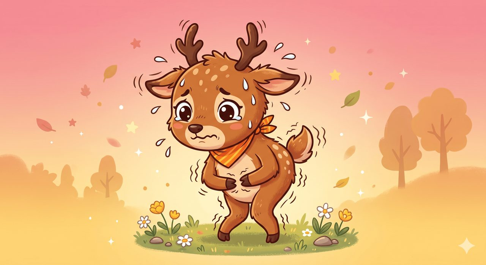
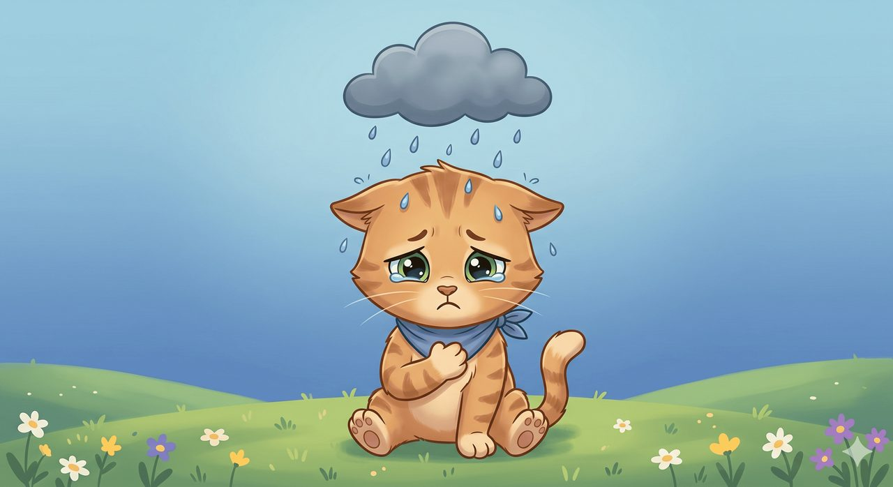
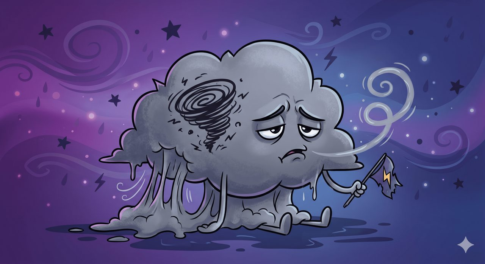
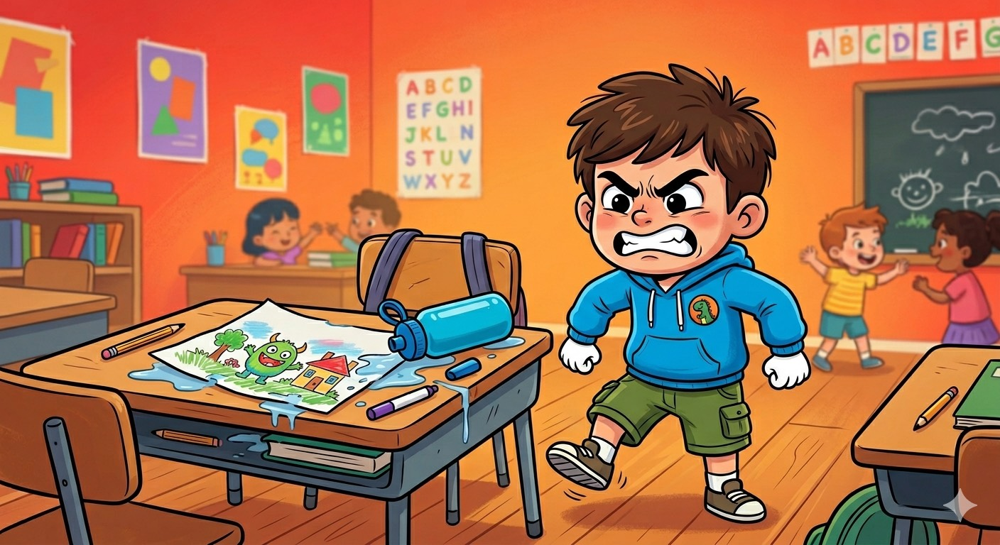
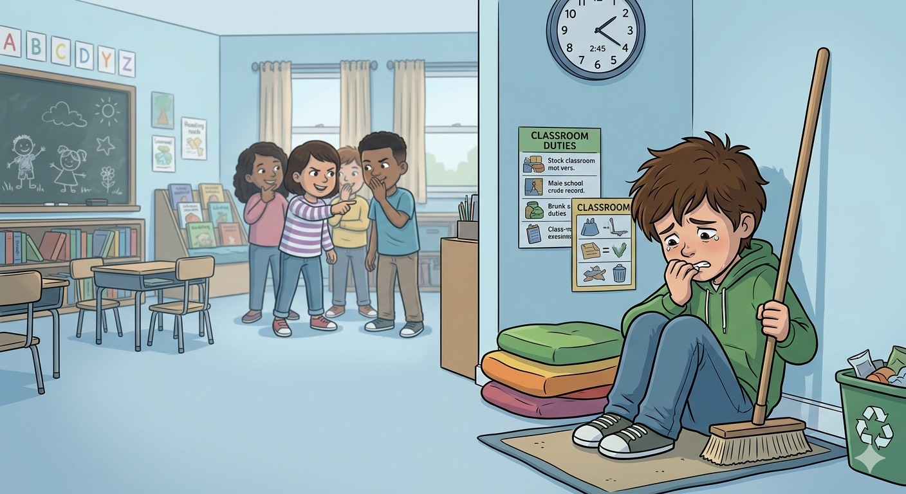
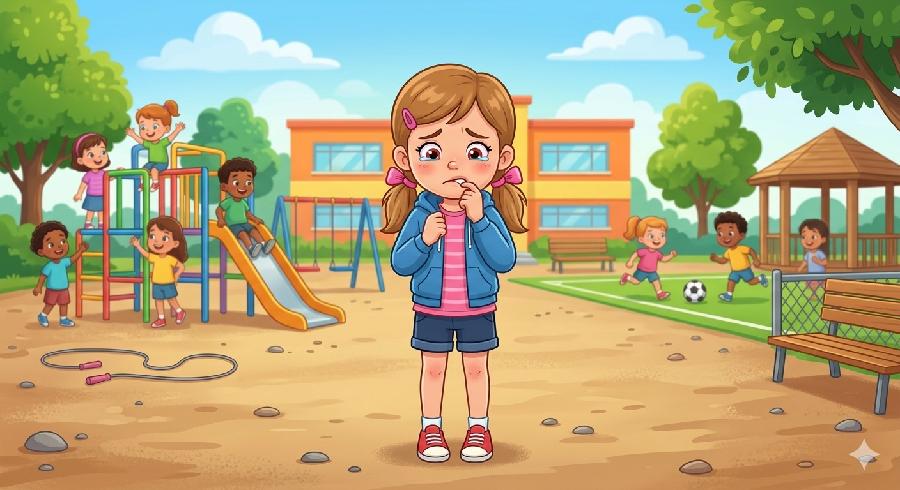
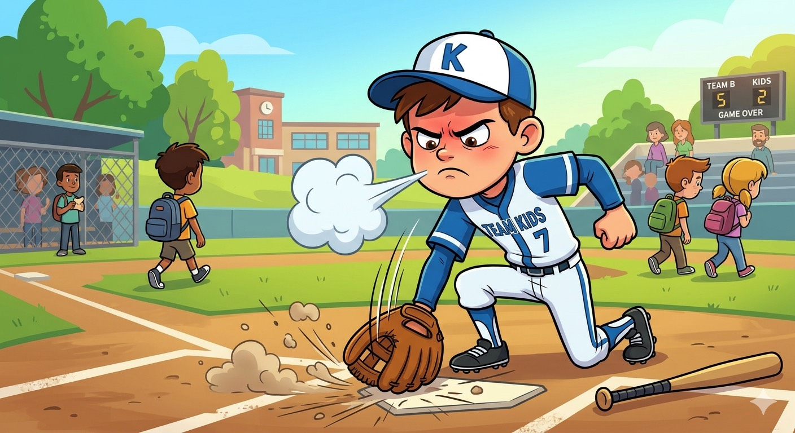
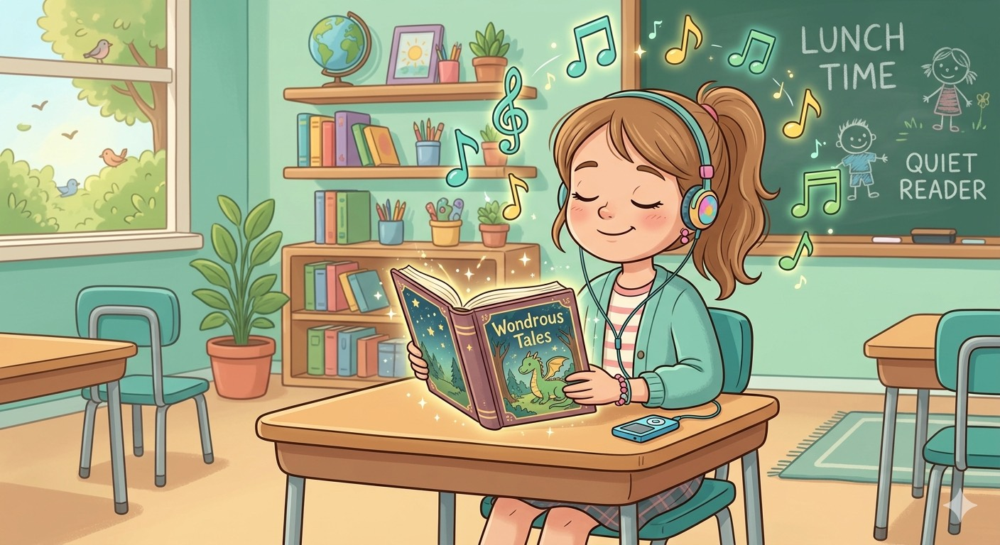

中年級 SEL 圍圈 ・ 看圖找心情
真實之眼看到自己的心
我們都是「情緒小偵探」🔍




開始之前 ・ 我們的約定
圍圈的三個約定
🤫
安全沉默
還沒想好沒關係，
輕輕說一聲「Pass」就好。
💬
說完整的話
把一句話好好說完，
讓大家都聽得懂。
怎麼玩 ・ 偵探的三個步驟
怎麼當情緒小偵探？
→
2
🔍
找線索
看他的眉毛、拳頭、肩膀……
→
情緒大偵探 ・ 找找身體的線索

情境①・老師示範下課，畫被潑到水
🕵️ 身體的線索
眉毛皺得緊緊的、雙手握成拳頭、眼睛瞪著對方
情緒大偵探 ・ 找找身體的線索

情境②・換你當偵探打掃時被同學嘲笑
🕵️ 身體的線索
低著頭、躲在角落、咬著指甲、一句話也不說
情緒大偵探 ・ 找找身體的線索

情境③・換你當偵探體育課分組時落單
🕵️ 身體的線索
用力抓著衣角、咬著嘴唇、眼睛紅紅地看著地上
情緒大偵探 ・ 找找身體的線索

情境④・換你當偵探打球漏接、摔了手套
🕵️ 身體的線索
大聲嘆氣、肩膀聳得高高、用力把手套摔在地上
情緒大偵探 ・ 找找身體的線索

情境⑤・換你當偵探午休，放鬆聽音樂
🕵️ 身體的線索
肩膀放得很輕鬆、嘴角微微往上、跟著音樂輕輕搖
主題圍圈 ・ 選一隻、說說看
選一隻最像你的小客人
這些不舒服的情緒都是「過客」，看到牠、跟牠說聲嗨就好。🌤️
收尾 ・ Check-out
🎟️ 今天的出場券
今天在這個圈子裡，我帶走的一句話是：
＿＿ 年 ＿＿ 班 姓名：＿＿＿＿＿＿
寫好後交給老師，就完成今天的圍圈囉！
每一種情緒，都可以被看見。
每顆心，都值得被好好接住 ❤